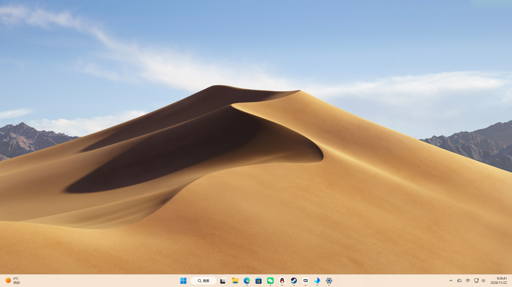
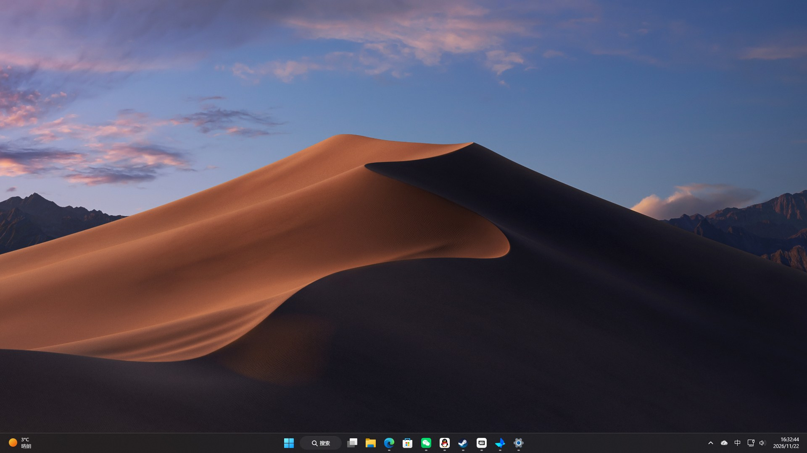

Fewer background tasks
Background services and startup entries are trimmed so resources go to what is actually running.
Subtract from stock Windows.
Drivers, updates and core components stay — only the extra weight goes.
Built by CangQiong01 and wslaoliu7a · Released


What goes is weight. What comes back is stability, compatibility and a longer life.
Background services and startup entries are trimmed so resources go to what is actually running.
Compatibility comes first for every adjustment, so saving weight does not create new problems.
Drivers and Windows Update still work, so a slim system remains a complete Windows.
Not a different system — just stock Windows with the unnecessary parts removed.
Being usable today, and for a long time, is the whole point.
Only the parts that do not help daily use are touched.
Four principles behind every trade-off in DomeOS-Next.
Fewer preinstalled apps and redundant components shorten boot time and lower idle load.
Core components and everyday features stay intact for work, play and peripherals.
Hardware driver support stays, minimizing device issues caused by slimming.
Windows Update stays available, so later fixes and adjustments can keep arriving.
FireflyOS and DomeOS-Next cover different generations of Windows with the same idea.

Windows 7 / 8.1 / 10 / 11, a slim build with a Firefly-themed visual identity.
Visit website →A slim build based on stock Windows, balancing full features and low overhead.
Meet the team →Thanks to everyone who built, advised and supported DomeOS-Next.
For the tools and assets that helped make DomeOS-Next better.
The build is hosted on DomeOS Team's cloud drive. Join the QQ group for release notes and feedback.